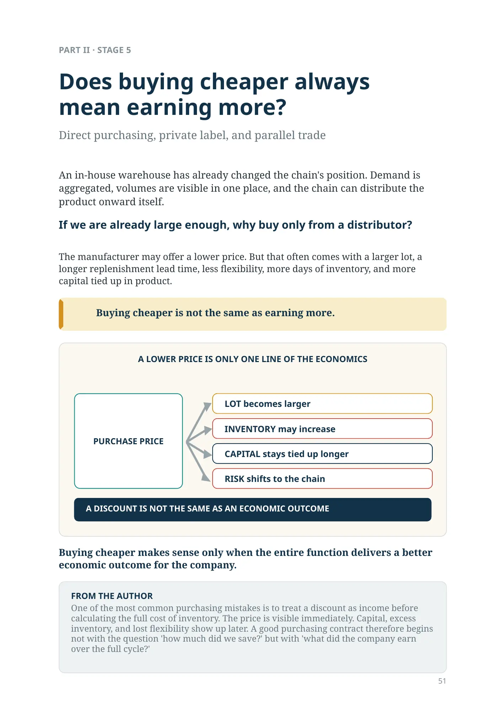
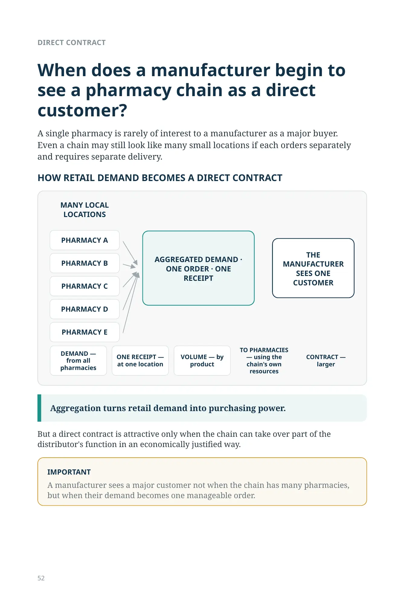
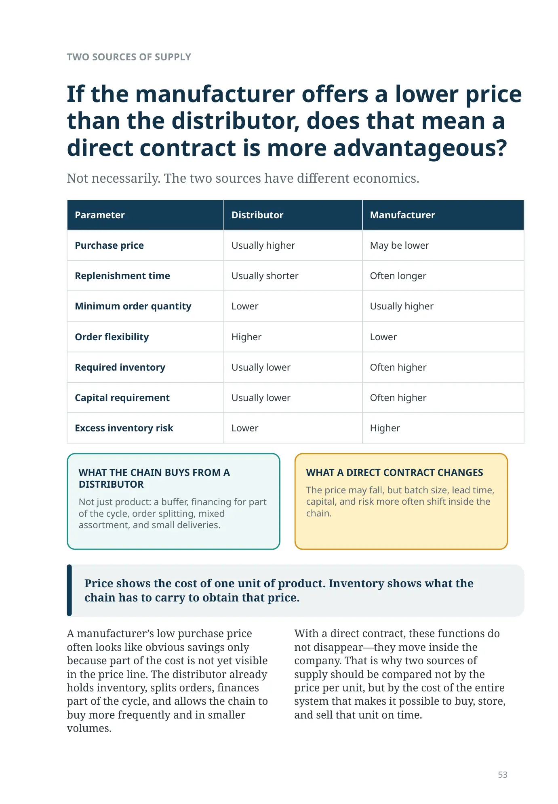
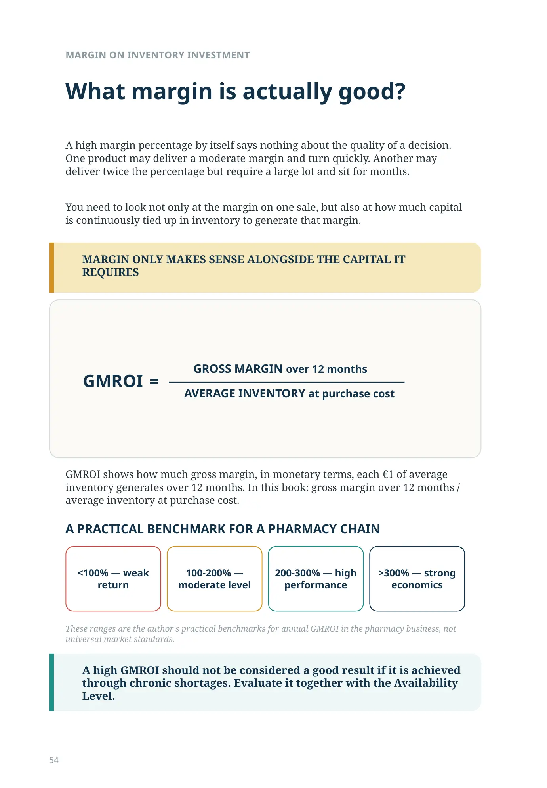
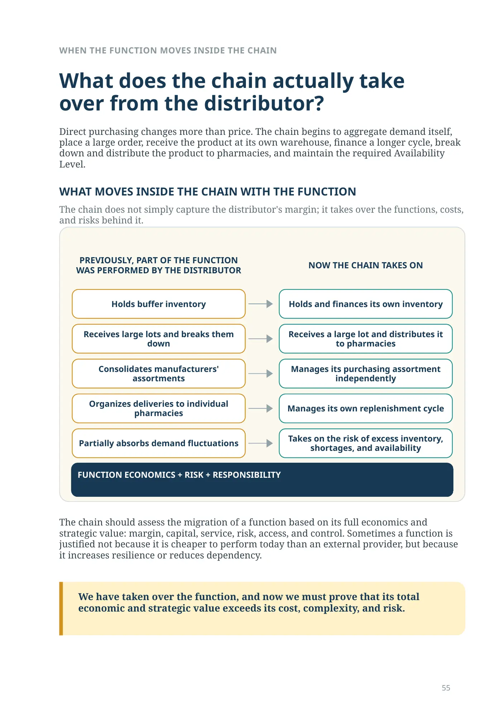
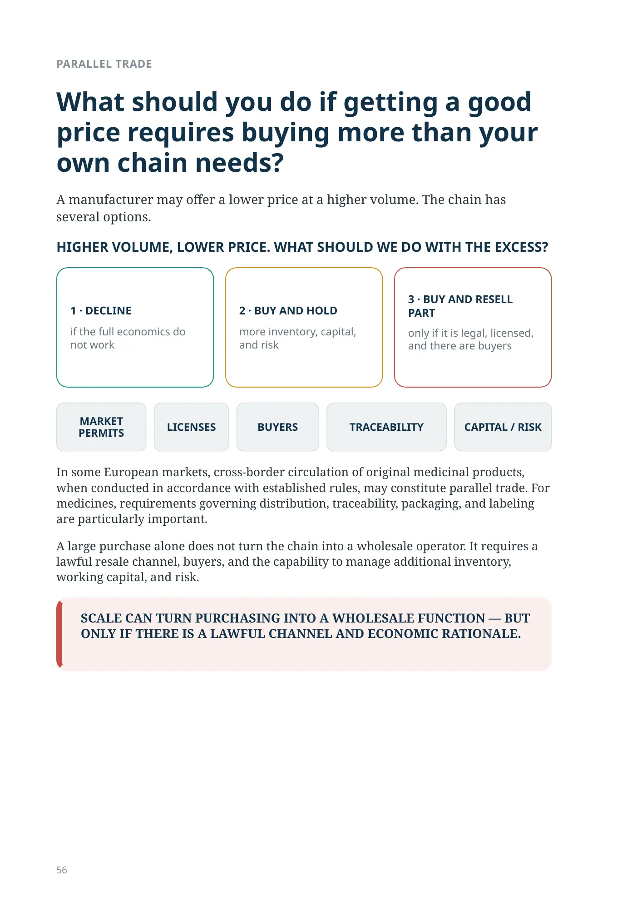
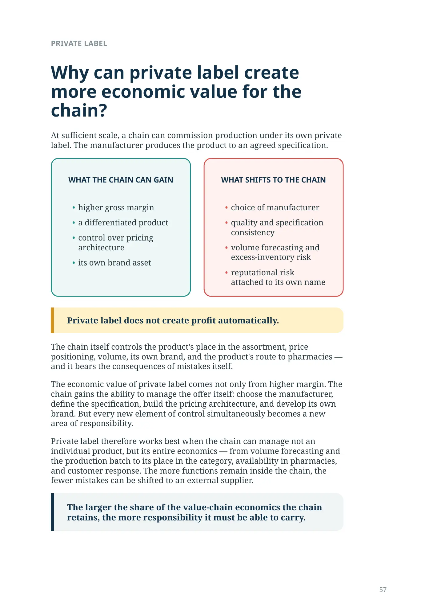
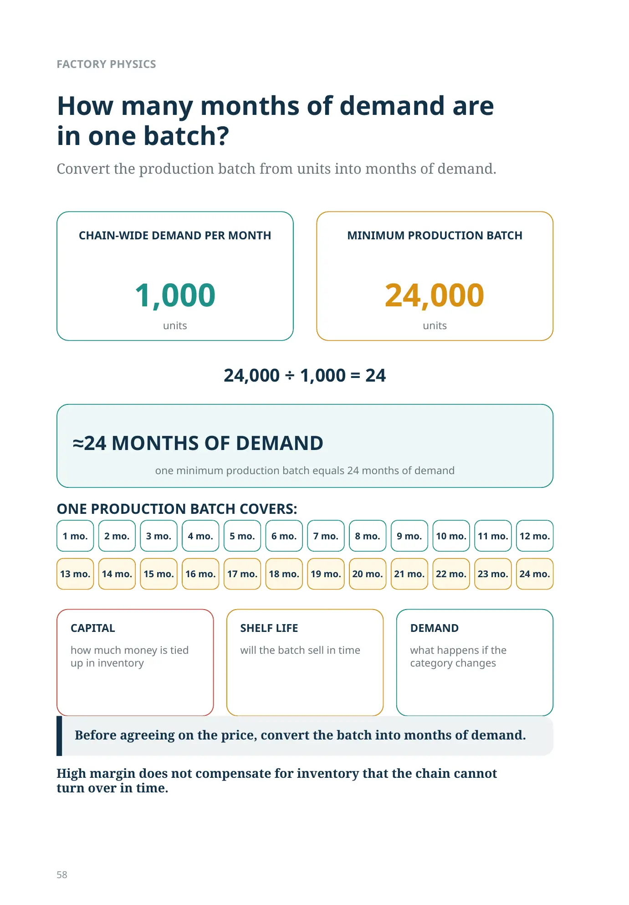
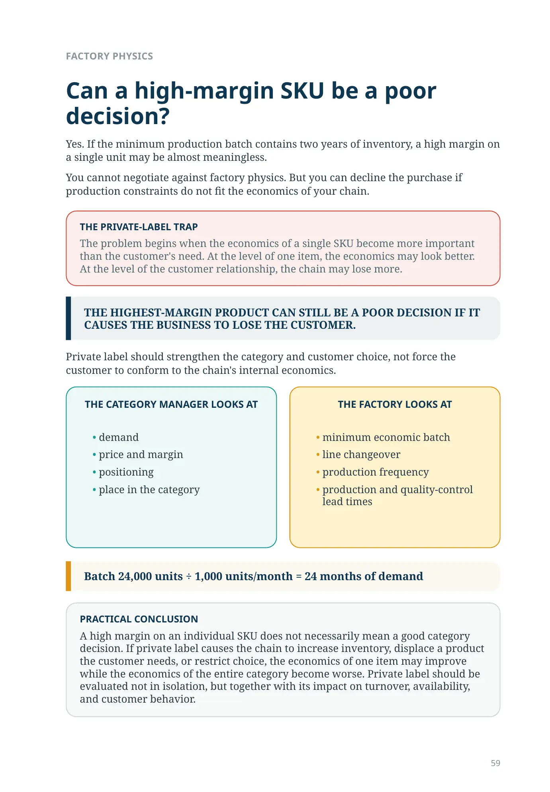
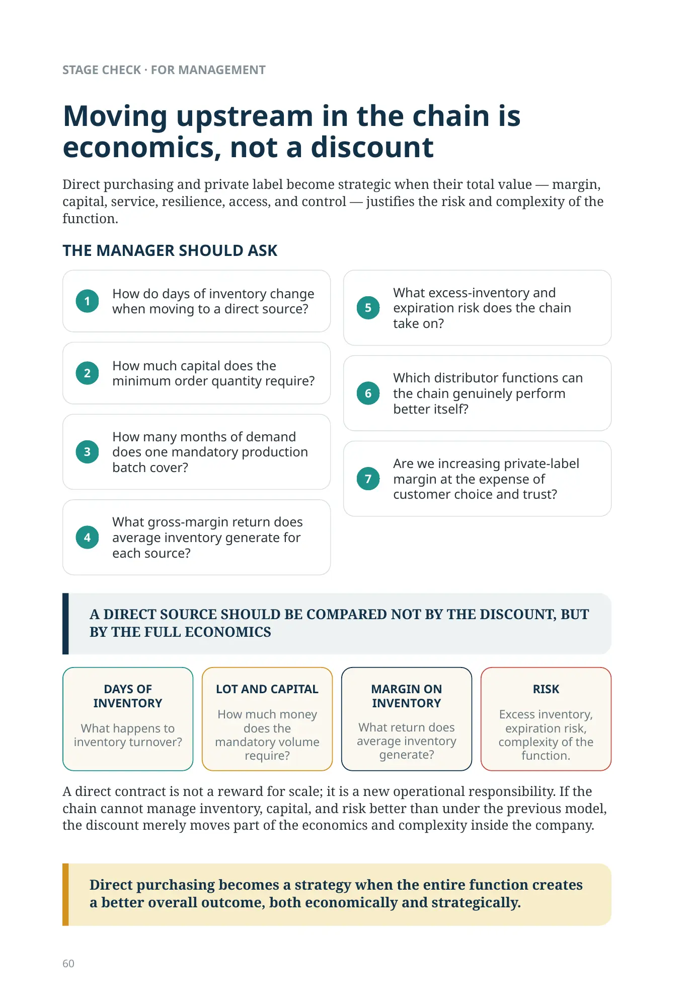
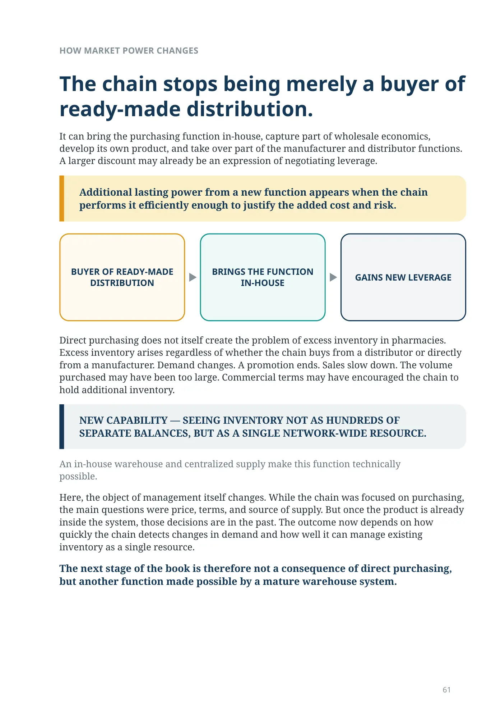
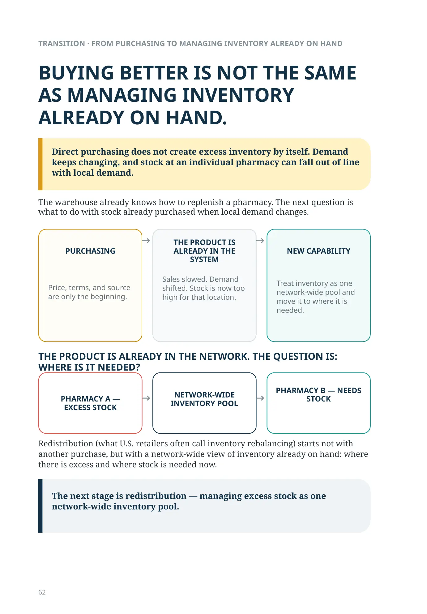
Does buying cheaper always mean earning more?
PART II · STAGE 5
Does buying cheaper always mean earning more?
Direct purchasing, private label, and parallel trade
An in-house warehouse has already changed the chain's position. Demand is aggregated, volumes are visible in one place, and the chain can distribute the product onward itself.
If we are already large enough, why buy only from a distributor?
The manufacturer may offer a lower price. But that often comes with a larger lot, a longer replenishment lead time, less flexibility, more days of inventory, and more capital tied up in product.
Buying cheaper is not the same as earning more.
A lower price is only one line of the economics
PURCHASE PRICE
LOT becomes larger
INVENTORY may increase
CAPITAL stays tied up longer
RISK shifts to the chain
A DISCOUNT IS NOT THE SAME AS AN ECONOMIC OUTCOME
Buying cheaper makes sense only when the entire function delivers a better economic outcome for the company.
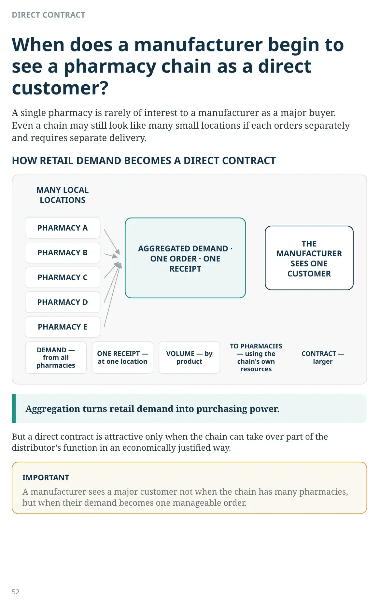
DIRECT CONTRACT
When does a manufacturer begin to see a pharmacy chain as a direct customer?
A single pharmacy is rarely of interest to a manufacturer as a major buyer. Even a chain may still look like many small locations if each orders separately and requires separate delivery.
HOW RETAIL DEMAND BECOMES A DIRECT CONTRACT
MANY LOCAL LOCATIONS
AGGREGATED DEMAND · ONE ORDER · ONE RECEIPT
THE MANUFACTURER SEES ONE CUSTOMER
DEMAND — from all pharmacies
ONE RECEIPT — at one location
VOLUME — by product
TO PHARMACIES — using the chain's own resources
CONTRACT — larger
Aggregation turns retail demand into purchasing power.
But a direct contract is attractive only when the chain can take over part of the distributor's function in an economically justified way.
TWO SOURCES OF SUPPLY
If the manufacturer offers a lower price than the distributor, does that mean a direct contract is more advantageous?
Not necessarily. The two sources have different economics.
| Parameter | Distributor | Manufacturer |
|---|---|---|
| Purchase price | Usually higher | May be lower |
| Replenishment time | Usually shorter | Often longer |
| Minimum order quantity | Lower | Usually higher |
| Order flexibility | Higher | Lower |
| Required inventory | Usually lower | Often higher |
| Capital requirement | Usually lower | Often higher |
| Excess inventory risk | Lower | Higher |
Price shows the cost of one unit of product. Inventory shows what the chain has to carry to obtain that price.
A manufacturer’s low purchase price often looks like obvious savings only because part of the cost is not yet visible in the price line. The distributor already holds inventory, splits orders, finances part of the cycle, and allows the chain to buy more frequently and in smaller volumes.
With a direct contract, these functions do not disappear—they move inside the company. That is why two sources of supply should be compared not by the price per unit, but by the cost of the entire system that makes it possible to buy, store, and sell that unit on time.
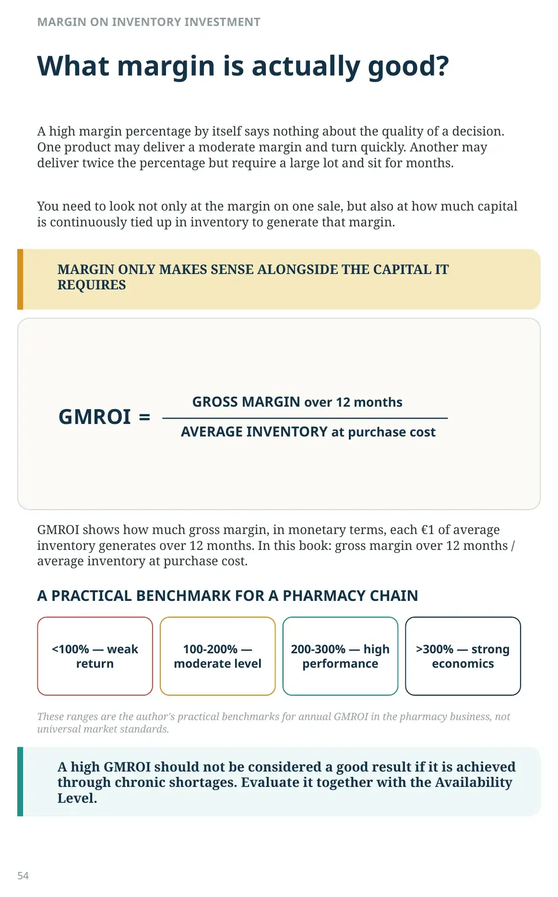
MARGIN ON INVENTORY INVESTMENT
What margin is actually good?
A high margin percentage by itself says nothing about the quality of a decision. One product may deliver a moderate margin and turn quickly. Another may deliver twice the percentage but require a large lot and sit for months.
You need to look not only at the margin on one sale, but also at how much capital is continuously tied up in inventory to generate that margin.
MARGIN ONLY MAKES SENSE ALONGSIDE THE CAPITAL IT REQUIRES
GROSS MARGIN over 12 months ÷ AVERAGE INVENTORY at purchase cost = GMROI
GMROI shows how much gross margin, in monetary terms, each €1 of average inventory generates over 12 months. In this book: gross margin over 12 months / average inventory at purchase cost.
A PRACTICAL BENCHMARK FOR A PHARMACY CHAIN
<100% — weak return
100-200% — moderate level
200-300% — high performance
>300% — strong economics
These ranges are the author's practical benchmarks for annual GMROI in the pharmacy business, not universal market standards.
A high GMROI should not be considered a good result if it is achieved through chronic shortages. Evaluate it together with the Availability Level.
WHEN THE FUNCTION MOVES INSIDE THE CHAIN
What does the chain actually take over from the distributor?
Direct purchasing changes more than price. The chain begins to aggregate demand itself, place a large order, receive the product at its own warehouse, finance a longer cycle, break down and distribute the product to pharmacies, and maintain the required Availability Level.
WHAT MOVES INSIDE THE CHAIN WITH THE FUNCTION
The chain does not simply capture the distributor's margin; it takes over the functions, costs, and risks behind it.
PREVIOUSLY, PART OF THE FUNCTION WAS PERFORMED BY THE DISTRIBUTOR
- Holds buffer inventory
- Receives large lots and breaks them down
- Consolidates manufacturers' assortments
- Organizes deliveries to individual pharmacies
- Partially absorbs demand fluctuations
NOW THE CHAIN TAKES ON
- Holds and finances its own inventory
- Receives a large lot and distributes it to pharmacies
- Manages its purchasing assortment independently
- Manages its own replenishment cycle
- Takes on the risk of excess inventory, shortages, and availability
FUNCTION ECONOMICS + RISK + RESPONSIBILITY
The chain should assess the migration of a function based on its full economics and strategic value: margin, capital, service, risk, access, and control. Sometimes a function is justified not because it is cheaper to perform today than an external provider, but because it increases resilience or reduces dependency.
We have taken over the function, and now we must prove that its total economic and strategic value exceeds its cost, complexity, and risk.
PARALLEL TRADE
What should you do if getting a good price requires buying more than your own chain needs?
A manufacturer may offer a lower price at a higher volume. The chain has several options.
HIGHER VOLUME, LOWER PRICE. WHAT SHOULD WE DO WITH THE EXCESS?
1 · DECLINE
if the full economics do not work
2 · BUY AND HOLD
more inventory, capital, and risk
3 · BUY AND RESELL PART
only if it is legal, licensed, and there are buyers
MARKET PERMITS
LICENSES
BUYERS
TRACEABILITY
CAPITAL / RISK
In some European markets, cross-border circulation of original medicinal products, when conducted in accordance with established rules, may constitute parallel trade. For medicines, requirements governing distribution, traceability, packaging, and labeling are particularly important.
A large purchase alone does not turn the chain into a wholesale operator. It requires a lawful resale channel, buyers, and the capability to manage additional inventory, working capital, and risk.
SCALE CAN TURN PURCHASING INTO A WHOLESALE FUNCTION — BUT ONLY IF THERE IS A LAWFUL CHANNEL AND ECONOMIC RATIONALE.
PRIVATE LABEL
Why can private label create more economic value for the chain?
At sufficient scale, a chain can commission production under its own private label. The manufacturer produces the product to an agreed specification.
WHAT THE CHAIN CAN GAIN
- higher gross margin
- a differentiated product
- control over pricing architecture
- its own brand asset
WHAT SHIFTS TO THE CHAIN
- choice of manufacturer
- quality and specification consistency
- volume forecasting and excess-inventory risk
- reputational risk attached to its own name
Private label does not create profit automatically.
The chain itself controls the product's place in the assortment, price positioning, volume, its own brand, and the product's route to pharmacies — and it bears the consequences of mistakes itself.
The economic value of private label comes not only from higher margin. The chain gains the ability to manage the offer itself: choose the manufacturer, define the specification, build the pricing architecture, and develop its own brand. But every new element of control simultaneously becomes a new area of responsibility.
Private label therefore works best when the chain can manage not an individual product, but its entire economics — from volume forecasting and the production batch to its place in the category, availability in pharmacies, and customer response. The more functions remain inside the chain, the fewer mistakes can be shifted to an external supplier.
The larger the share of the value-chain economics the chain retains, the more responsibility it must be able to carry.
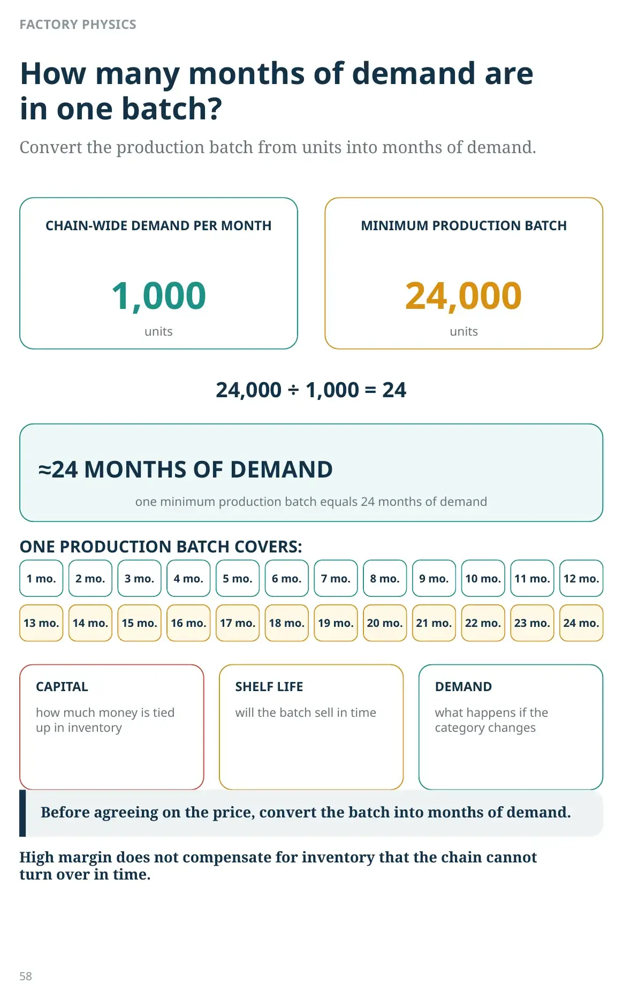
FACTORY PHYSICS
How many months of demand are in one batch?
Convert the production batch from units into months of demand.
Chain-wide demand per month
1,000
units
Minimum production batch
24,000
units
24,000 ÷ 1,000 = 24
≈24 months of demand
one minimum production batch equals 24 months of demand
One production batch covers:
1 mo. · 2 mo. · 3 mo. · 4 mo. · 5 mo. · 6 mo. · 7 mo. · 8 mo. · 9 mo. · 10 mo. · 11 mo. · 12 mo. · 13 mo. · 14 mo. · 15 mo. · 16 mo. · 17 mo. · 18 mo. · 19 mo. · 20 mo. · 21 mo. · 22 mo. · 23 mo. · 24 mo.
The longer this horizon, the more capital depends on forecast accuracy.
CAPITAL
how much money is tied up in inventory
SHELF LIFE
will the batch sell in time
DEMAND
what happens if the category changes
Before agreeing on the price, convert the batch into months of demand.
High margin does not compensate for inventory that the chain cannot turn over in time.
FACTORY PHYSICS
Can a high-margin SKU be a poor decision?
Yes. If the minimum production batch contains two years of inventory, a high margin on a single unit may be almost meaningless.
You cannot negotiate against factory physics. But you can decline the purchase if production constraints do not fit the economics of your chain.
THE HIGHEST-MARGIN PRODUCT CAN STILL BE A POOR DECISION IF IT CAUSES THE BUSINESS TO LOSE THE CUSTOMER.
Private label should strengthen the category and customer choice, not force the customer to conform to the chain's internal economics.
THE CATEGORY MANAGER LOOKS AT
- demand
- price and margin
- positioning
- place in the category
THE FACTORY LOOKS AT
- minimum economic batch
- line changeover
- production frequency
- production and quality-control lead times
Batch 24,000 units ÷ 1,000 units/month = 24 months of demand
STAGE CHECK · FOR MANAGEMENT
Moving upstream in the chain is economics, not a discount
Direct purchasing and private label become strategic when their total value — margin, capital, service, resilience, access, and control — justifies the risk and complexity of the function.
THE MANAGER SHOULD ASK
- How do days of inventory change when moving to a direct source?
- How much capital does the minimum order quantity require?
- How many months of demand does one mandatory production batch cover?
- What gross-margin return does average inventory generate for each source?
- What excess-inventory and expiration risk does the chain take on?
- Which distributor functions can the chain genuinely perform better itself?
- Are we increasing private-label margin at the expense of customer choice and trust?
A DIRECT SOURCE SHOULD BE COMPARED NOT BY THE DISCOUNT, BUT BY THE FULL ECONOMICS
DAYS OF INVENTORY
What happens to inventory turnover?
LOT AND CAPITAL
How much money does the mandatory volume require?
MARGIN ON INVENTORY
What return does average inventory generate?
RISK
Excess inventory, expiration risk, complexity of the function.
A direct contract is not a reward for scale; it is a new operational responsibility. If the chain cannot manage inventory, capital, and risk better than under the previous model, the discount merely moves part of the economics and complexity inside the company.
Direct purchasing becomes a strategy when the entire function creates a better overall outcome, both economically and strategically.
HOW MARKET POWER CHANGES
The chain stops being merely a buyer of ready-made distribution.
It can bring the purchasing function in-house, capture part of wholesale economics, develop its own product, and take over part of the manufacturer and distributor functions. A larger discount may already be an expression of negotiating leverage.
Additional lasting power from a new function appears when the chain performs it efficiently enough to justify the added cost and risk.
BUYER OF READY-MADE DISTRIBUTION
BRINGS THE FUNCTION IN-HOUSE
GAINS NEW LEVERAGE
Direct purchasing does not itself create the problem of excess inventory in pharmacies. Excess inventory arises regardless of whether the chain buys from a distributor or directly from a manufacturer. Demand changes. A promotion ends. Sales slow down. The volume purchased may have been too large. Commercial terms may have encouraged the chain to hold additional inventory.
NEW CAPABILITY — SEEING INVENTORY NOT AS HUNDREDS OF SEPARATE BALANCES, BUT AS A SINGLE NETWORK-WIDE RESOURCE.
An in-house warehouse and centralized supply make this function technically possible.
Here, the object of management itself changes. While the chain was focused on purchasing, the main questions were price, terms, and source of supply. But once the product is already inside the system, those decisions are in the past. The outcome now depends on how quickly the chain detects changes in demand and how well it can manage existing inventory as a single resource.
The next stage of the book is therefore not a consequence of direct purchasing, but another function made possible by a mature warehouse system.
TRANSITION · FROM PURCHASING TO MANAGING INVENTORY ALREADY ON HAND
BUYING BETTER IS NOT THE SAME AS MANAGING INVENTORY ALREADY ON HAND.
Direct purchasing does not create excess inventory by itself. Demand keeps changing, and stock at an individual pharmacy can fall out of line with local demand.
The warehouse already knows how to replenish a pharmacy. The next question is what to do with stock already purchased when local demand changes.
PURCHASING
Price, terms, and source are only the beginning.
THE PRODUCT IS ALREADY IN THE SYSTEM
Sales slowed. Demand shifted. Stock is now too high for that location.
NEW CAPABILITY
Treat inventory as one network-wide pool and move it to where it is needed.
THE PRODUCT IS ALREADY IN THE NETWORK. THE QUESTION IS: WHERE IS IT NEEDED?
PHARMACY A — EXCESS STOCK
NETWORK-WIDE INVENTORY POOL
PHARMACY B — NEEDS STOCK
Redistribution (what U.S. retailers often call inventory rebalancing) starts not with another purchase, but with a network-wide view of inventory already on hand: where there is excess and where stock is needed now.
The next stage is redistribution — managing excess stock as one network-wide inventory pool.